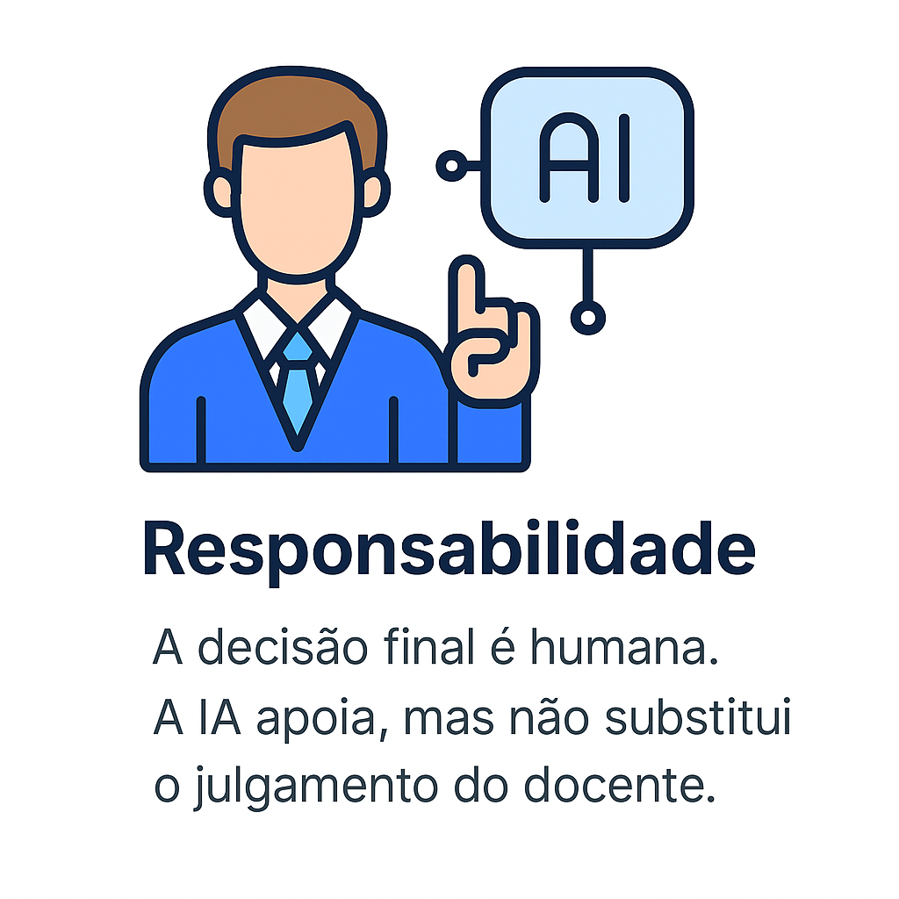
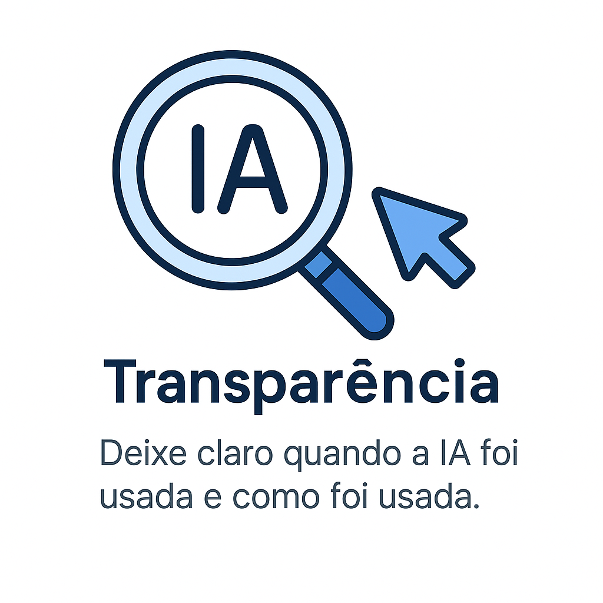
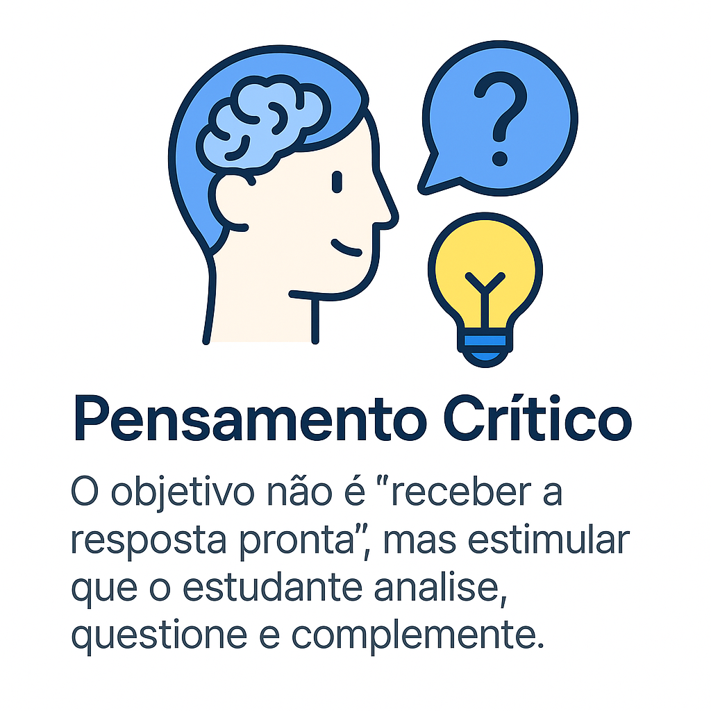
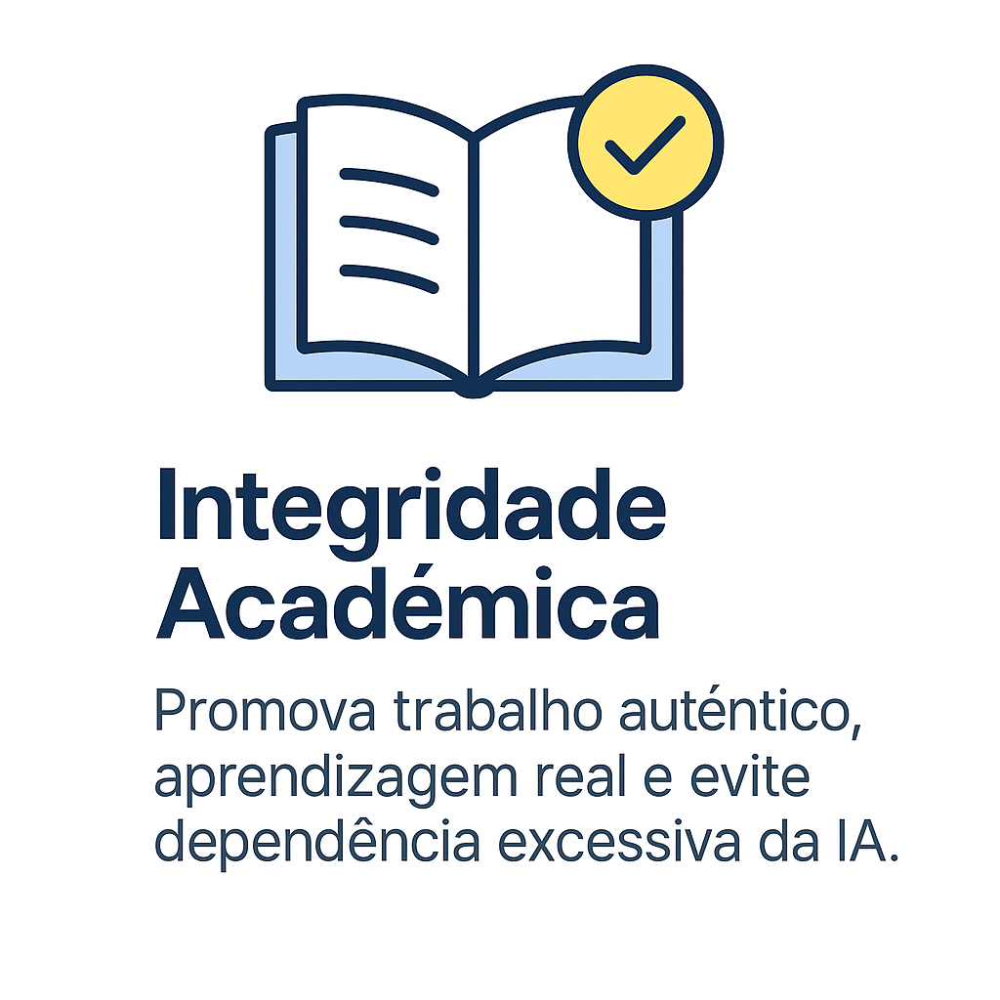

Engenharia de prompt é a prática de desenvolver instruções (prompts) bem estruturadas e específicas para obter respostas eficazes e alinhadas ao objetivo desejado de um modelo de Inteligência Artificial Generativa, como ChatGPT ou Gemini. Ela é fundamental para transformar a IA em uma aliada poderosa no contexto educacional.
Quanto melhor o prompt, melhor a resposta da IA.
Elementos Essenciais de um Prompt Eficiente
Instrução clara: O que você deseja que a IA faça?
Contexto: Informações adicionais como disciplina, ano escolar, perfil da turma.
Exemplos: Modelos de entrada e saída ajudam a guiar a IA.
Formato esperado: Texto, lista, tabela, plano de aula, etc.
Tom e estilo: Formal, infantil, acadêmico, lúdico, entre outros.
Princípios para escrever prompts melhores
Princípios para Design de Bons Prompts
Comece simples: Um prompt direto costuma funcionar melhor do que algo excessivamente complexo.
Itere e refine: Teste variações até encontrar o formato que “desperta” a melhor resposta da IA.
Teste limites: Explore diferentes formas de formular a mesma tarefa — isso ajuda a entender como a IA responde a nuances.
Seja específico e contextualizado: Quanto mais informações relevantes você fornecer, melhor será o resultado.
Utilize “personas”: Oriente a IA a assumir papéis — por exemplo: “Você é professor de Geografia”, ou “Você é tutor para educação infantil”.
Nota ética adicional
Considere a privacidade e o respeito aos dados: não insira informações sensíveis de alunos ou dados pessoais.
Ética e Engenharia de Prompt
Aspectos éticos principais
A adoção de IA em contextos educacionais traz grandes oportunidades — personalização, aceleração de tarefas, auxílio criativo —, mas também exige atenção aos desafios éticos: transparência, equidade, privacidade, viés, integridade acadêmica.
Alguns dos principais aspectos:
Transparência e explicabilidade: Saber quando e como a IA foi usada, e como ela chegou àquela resposta.
Justiça, viés e inclusão: Modelos de IA podem reproduzir vieses dos dados com que foram treinados. É necessário refletir sobre quem está representado e quem está invisibilizado.
Privacidade e proteção de dados: Em especial no uso escolar, cuidado em não revelar informações pessoais ou sensíveis de alunos.
Integridade acadêmica: A IA não deve substituir o pensamento crítico, nem mascarar autoria ou aprendizagem — mas ser aliada no processo.
Sustentabilidade e impacto social: A tecnologia de IA tem impactos ambientais, e o acesso desigual pode ampliar o fosso digital.
Princípios Éticos Fundamentais




Imagem 1 de 6
Dicas Avançadas para Prompts Educacionais
Dica
Aplicação
Exemplo
Seja Específico
Descreva o que deseja com detalhes claros
"Crie uma atividade sobre frações para o 5º ano com jogos e exemplos visuais."
Use Etapas
Divida a tarefa em partes
"1. Explique o conceito; 2. Dê um exemplo; 3. Proponha uma atividade."
Defina um papel
Peça à IA para assumir uma função
"Finja ser um professor de história e explique a Revolução Francesa de forma teatral."
Use contexto educacional
Inclua ano, disciplina e BNCC
"Crie uma atividade sobre poluição para o 7º ano com base na habilidade EF07CI08."
Adote estilo/tom adequado
Indique se o texto deve ser formal, infantil, instrucional
"Explique a digestão como se fosse uma história para crianças de 8 anos."
Quais são os Exemplos Práticos na Educação?
Prompt Fraco:
"Explique a fotossíntese."
Prompt Melhorado:
"Explique o processo de fotossíntese de forma lúdica, com analogias simples, para alunos do 6º ano do ensino fundamental, incluindo um exemplo prático com planta doméstica."
Prompt Avançado com Estrutura:
"Você é um professor de Ciências da Natureza. Crie um plano de aula para o 6º ano sobre fotossíntese contendo:
1. Objetivo da aula
2. Atividade prática com material acessível
3. Três perguntas avaliativas
4. Indicação de habilidade da BNCC
Como criar Prompts para Elaboração de Conteúdo?
Alfabetização Midiática: "Explique alfabetização midiática para ensino médio. Indique fontes, apresente diferentes pontos de vista, explique limitações e incentive reflexão crítica."
Mudança Climática: "Crie infográfico sobre mudança climática para 8º ano. Inclua dados atualizados, cite referências, destaque vieses e proponha debate."
Avaliação Crítica: "Analise este texto e aponte possíveis vieses ou lacunas. Sugira duas perguntas provocativas para os alunos discutirem."
Planejamento Pedagógico: "Sugira sequência de três aulas que promova autonomia crítica, inclua momentos de uso da IA como apoio e descreva como verificar respostas."
Quer se aprofundar?
Se você deseja explorar mais sobre técnicas avançadas de engenharia de prompt, acesse o Prompting Guide. Lá você encontrará exemplos, boas práticas e fundamentos detalhados para criar prompts ainda mais eficientes.